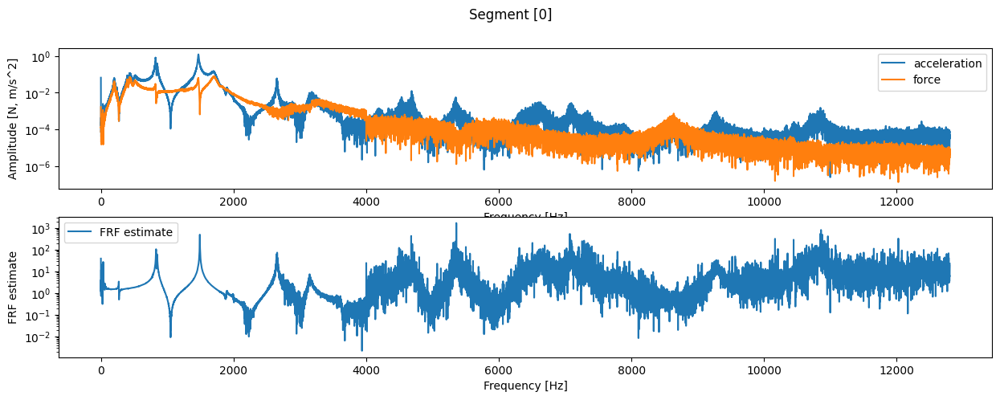
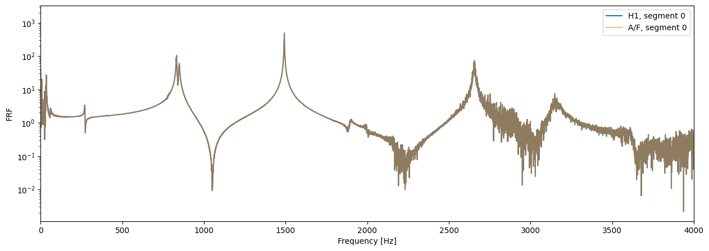
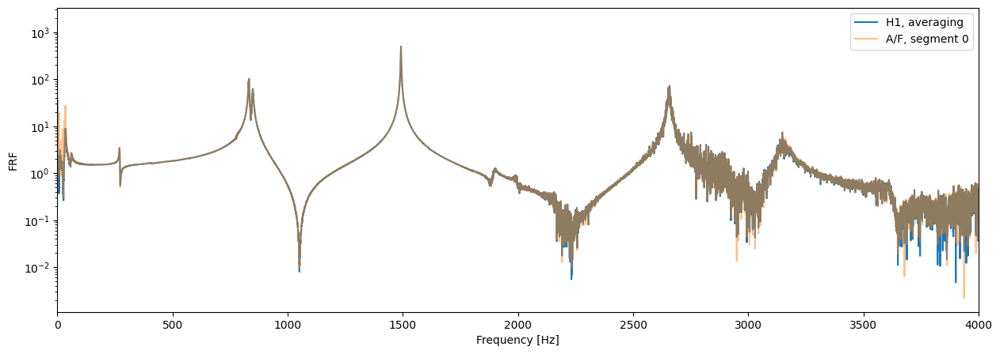
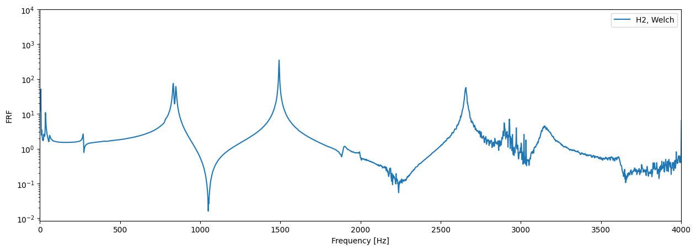

Random excitation - estimation of frequency response functions#
Let us recall:
Note
The frequency response function \(H(\omega)\) is the ratio of the (complex) amplitudes of the harmonic response and the excitation of the observed system:
We determine the relationship between the system response \(x(t)\) and the known excitation signal \(f(t)\), which we measured in exercise 9. The signals were obtained using random, broadband, stationary excitation.
The purpose of this exercise is to learn the signal processing methods for determining estimators of the frequency response functions of a linear system from such measurements.
Note
In this template, \(X(\omega)\) and \(x(t)\) denote the response, \(F(\omega)\) and \(f(t)\) the excitation of the system, and \(H(\omega)\) the frequency response function, without assumptions about the measured physical quantities.
In our case, the measured signals are acceleration and force, so the computed frequency response function takes the form of the accelerance.
Homework assignment#
Homework assignment
Prepare a short report (3 to 10 code cells in the Jupyter Notebook environment) that shows the data of your task (from the table) and that you took all the parameters and requirements of the task into account. It should contain the results and a short comment on the performed measurements and the computed estimators of the frequency response function, according to the task data. The report should contain:
a plot of the PSD of your measurement (average of all segments, at the point determined in the data of exercise 9),
a plot of the frequency response function at your measured point (\(i\)), estimated with \(H_i(\omega) = X_i(\omega) / F_i(\omega)\).
a plot of the frequency response function at your measured point (\(i\)), computed with the estimator \(H_1(\omega)\) or \(H_2(\omega)\) (according to the task data). Here, average the spectra (\(G_{xy}\)) of the measured signals divided into segments of length 2 s.
Bonus:
Compute and plot both estimators of the frequency response function (\(H_1\), \(H_2\)).
Compute the cross- and auto-spectra of the signals by averaging overlapping segments and using windowing,
The length of an individual segment for the PSD and CSD computation is given in the task data, use 50% overlap of the segments,
To reduce spectral leakage, use the window given in the task data on each segment.
Also compute and plot the coherence of the FRF measurement, \(\gamma^2_{fx}(\omega)\).
Submit the report in .pdf format (see the instructions for submitting homework assignments).
Reading the measured signals#
Parameters of the performed measurement
We will compute the frequency response functions of the steel beam from the measurements performed in exercise 9.
The parameters of the performed measurement are also important when processing the acquired signals. If you followed the instructions during the measurements, the basic parameters of your signals are as follows (if you used different settings in the measurement, adjust the values as needed!):
Basic acquisition parameters:
Two channels: force and acceleration (IEPE).
Sampling frequency: 25600 Hz,
Duration of each acquired segment: 2 s,
Number of acquired segments: 5.
Basic characteristics of the measurement:
11 marked measurement points (at positions \([25, 475]\) mm, spacing \(45\) mm).
Excitation at location \(0\), response measured at locations \(i \in [1, 2, \dots 10]\).
Duration of each generated segment: 2 s,
Random excitation signal profile of constant amplitude in the range \([10, 3000] Hz\),
Average excitation force amplitude: 1 N RMS.
Reading the saved file - measurement at one of the marked points
pot = '../data/10/meritev.pkl'
meritev = pickle.load(open(pot, 'rb'))
print(meritev.keys())
dict_keys(['data', 'fs', 'channels'])
Sampling frequency and saved channels
fs = meritev['fs']
print(fs, meritev['channels'])
25600.0 ['Force', 'Acceleration']
Shape of the saved signals: (segments, channels, time)
print(meritev['data'].shape)
(5, 2, 51200)
Selecting a segment for the analysis
force, acc = meritev['data'].transpose(1, 0, 2) # transpose the signals so that the first axis holds both measured channels, force and acceleration
force.shape
(5, 51200)
time = np.arange(force.shape[1]) / fs
F = np.fft.rfft(force, axis=-1) / force.shape[-1] * 2 # compute the FFT along the time axis
A = np.fft.rfft(acc, axis=-1) / acc.shape[-1] * 2
F.shape
(5, 25601)
freq = np.fft.rfftfreq(len(time), 1/fs)
freq.shape
(25601,)
Plotting the amplitude spectra

Estimators of the frequency response function#
In real measurements, random noise (measurement error) in the acquired signals cannot be avoided.
Considering the response of linear time-invariant systems to random excitation with measurement error, we can write different estimators of the frequency response functions:
Note
The estimator \(H_1(\omega)\) assumes a non-negligible amount of random noise in the measurement of the response signal \(x(t)\). It is computed as:
Note
The estimator \(H_2(\omega)\) assumes a non-negligible amount of random noise in the measurement of the excitation signal \(f(t)\). It is computed as:
Note
The quality of the measurement can be assessed with the coherence. It is defined as:
The coherence takes values in the range \(\gamma_{fx}^2(f) \in [0, 1]\). It is a measure of the linear dependence between the signals at the input (excitation, \(f\)) and the output (response, \(x\)) of the system.
Caution: Computing the coherence only makes sense if the power spectral densities \(S_{fx}\), \(S_{xx}\), \(S_{ff}\) are determined by averaging several acquired segments of the random process!
Computing the estimator \(H1\)#
Computing the spectra: (since the spectra are divided by each other in the FRF computation, amplitude normalization is not strictly necessary).
G_fa = F.conj() * A
G_ff = F.conj() * F
H1 = G_fa / G_ff

With averaging
H1_povprečenje = np.mean(G_fa, axis=0) / np.mean(G_ff, axis=0)

Computing averaged power spectral densities with overlapping segments and windows#
Welch’s method determines the (cross- and auto-) power spectral densities of signals using averaging and windowing of the given signal, which is divided into segments with overlap.
In SciPy it is implemented in scipy.signal.csd (cross power spectral density) and scipy.signal.welch (auto power spectral density). The main parameters of scipy.signal.csd are:
x: the first signal.y: the second signal.fs: sampling frequency of the signalsxandy,window: the window to be used on each segment. Default"hann".nperseg: length of each segment of the signal when segmenting,noverlap: number of samples that overlap between segments. Default is half ofnperseg.
The \(H2\) estimator with Welch’s method#
Since we have random excitation in all segments, we can join the acquired segments:
a = np.hstack(acc)
f = np.hstack(force)
a.shape
(256000,)
freq_welch, G_aa = signal.csd(a, a, nperseg=len(time)//4, fs=fs)
freq_welch, G_af = signal.csd(a, f, nperseg=len(time)//4, fs=fs)
(For the proper normalization of the cross- and auto-spectra, see the other arguments of the function csd. In the FRF computation, the normalization of the spectra does not affect the result.)
H2_welch = G_aa / G_af
H2_welch.shape, freq_welch.shape
((6401,), (6401,))
